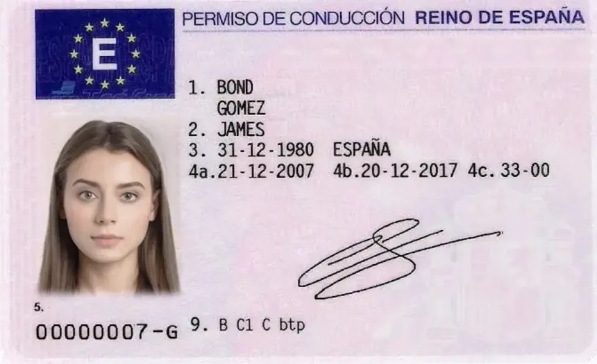

Claude: artifacts and Skills
Claude can turn a spreadsheet or a CSV into a working tool (an artifact: a small interactive app you can use and share), and it can learn a procedure once and repeat it every time (a Skill).
From a file to an interactive tool
Upload the data and ask for a dashboard, a simulator or a calculator. Claude writes the app, shows it next to the chat and lets you change it by talking: “add a filter by region”, “show the top 10 exposures”.
A procedure Claude always follows
A Skill is a folder with instructions (a SKILL.md file) and, optionally, templates or scripts. Claude loads it when the task matches: your AML review checklist, your report format, your credit memo structure.
Use case A · Credit portfolio stress test
A fictitious corporate loan book of 406 loans to Turkish companies, with internal rating, exposure (EAD), PD, LGD and LTV. Expected loss is a live formula (EL = EAD × PD × LGD), so any input can be re-stressed.
I am attaching a fictitious corporate credit portfolio (Excel). Read both sheets: "Portfolio" and "Assumptions & Notes". Build an interactive artifact that works as a stress test simulator: 1. Sliders to add a PD shock (0 to +500 bps) and an LGD shock (0 to +20 pp), applicable to all sectors or to the sectors I select. 2. Baseline vs stressed expected loss, in total and by sector, region and rating. 3. A chart of the 10 borrowers whose expected loss increases most. 4. A preset button for the reference scenario: +200 bps PD for Construction and Real Estate. 5. A short text box that explains the result in plain language for a credit committee. Check your calculations against the baseline EL in column L before showing them.
Use case B · AML transaction monitoring
A fictitious log of 50 bank transfers (15–22 October 2025) with origin and destination accounts, countries, banks, amount, a description and a risk score. Some go to Switzerland, Panama, Liechtenstein, Curaçao or Venezuela; others are split just below reporting thresholds.
The file is in Spanish (importe = amount, es_sospechoso = flagged as suspicious). Claude handles it without translating it first.
Attached is a fictitious CSV of bank transfers (separator ";", column names in Spanish).
Create an interactive compliance dashboard as an artifact, in English:
- KPIs: number of transactions, total amount, % flagged as suspicious, average risk score.
- Table with filters by country, bank, amount range and risk score, with high-risk rows highlighted.
- Map or bar chart of flows by destination country, separating high-risk jurisdictions.
- A "patterns" panel that detects: structuring (several transfers just below a threshold), round amounts, vague descriptions ("consultancy services"), and repeated counterparties.
Then list the 5 transactions you would escalate first and explain why in one line each.
Turn the review into a Skill
Once the procedure works, save it as a Skill so anyone in the team gets the same review, in the same format, every time. Ask Claude to write it for you:
Turn the AML review we just did into a Skill called "aml-transaction-review". The SKILL.md must include: - When to use it: whenever I upload a file of bank transactions and ask for an AML review. - The steps, in order: validate columns, compute KPIs, detect patterns (structuring, high-risk jurisdictions, round amounts, vague descriptions, repeated counterparties), rank the alerts. - The output format: a one-page summary with a table of alerts (ID, pattern, amount, countries, reason, suggested action). - What it must never do: decide whether to file a suspicious activity report. That decision is always for a compliance officer. Give me the folder ready to download as a .zip.
How to install it: in claude.ai go to Settings → Capabilities → Skills, upload the .zip and switch it on. From then on Claude uses it whenever the task matches.
ChatGPT: analysing long texts
Regulation runs to hundreds of pages. ChatGPT can read two long documents at once, extract obligations, compare them and give you a table you can check, even when the documents are in different languages.
EBF guidance on PSD2
The European Banking Federation’s guidance for implementing the revised Payment Services Directive: strong customer authentication, access to accounts by third parties, liability and incident reporting.
Act as a banking compliance expert. Read the attached document in full. 1. Summarise it in 10 bullet points for a bank's management committee. 2. Extract in a table every obligation for banks: article or section, obligation, who is responsible inside the bank (business, IT, compliance, risk), and deadline if any. 3. Mark with [QUOTE] the sentences you copy literally and give the page number, so I can check them. Answer in English.
I am attaching two documents: the EBF guidance on PSD2 (English) and the MiFID II directive (Spanish). Compare how each one deals with: - customer protection and information to the customer, - conflicts of interest, - incident and complaint handling, - the role of third parties. Give me a comparison table (topic | PSD2 | MiFID II | practical impact for a retail bank) and finish with the three areas where a bank operating in both payments and investments must coordinate internally. Answer in English and cite sections or articles.
Based only on the MiFID II document, write a 150-word explanation for a retail customer of why the bank asks them to complete a suitability test before advising on investments. Plain language, no legal jargon. Then translate it into Turkish.
Check before you trust: ask for article numbers and literal quotes, and open the PDF to verify two or three of them. Long documents are where models are most likely to fill gaps with plausible-sounding text.
Gemini: image recognition and text extraction
Gemini reads photos and scans: it extracts the fields of a document into structured data and, just as important for KYC, it can tell you what does not add up.

What a careful reviewer should spot
- Field 4b (expiry): 20-12-2017. The licence is expired.
- The name (“James Bond Gomez”) does not match the photo, which shows a woman.
- Licence number 00000007-G: a sequence typical of a sample, not a real ID.
- No visible security features to verify (hologram, MRZ, chip): a photo is never enough.
This is an identity document submitted for a customer onboarding (KYC). Extract all the fields into JSON with these keys: document_type, issuing_country, surname, given_name, date_of_birth, place_of_birth, issue_date, expiry_date, issuing_authority, document_number, licence_categories. Use the numbered fields printed on the card (1, 2, 3, 4a, 4b, 4c, 5, 9) to map each value. If a field is not legible, write null. Do not guess.
Now act as a KYC analyst. Using the data you extracted and the image: 1. Is the document valid today? Compare the expiry date with today's date. 2. Are there inconsistencies between the data and the photo, or between fields? 3. Does the document number follow the expected format for this country? 4. Which checks cannot be done from a photo, and what would you ask the customer for? Finish with a verdict: ACCEPT / REQUEST MORE INFORMATION / REJECT, and one line of justification.
Gemini
Upload the photo in the chat, or use the Gemini app on your phone to take it directly. It also reads tables in screenshots, handwritten notes and scanned contracts.
Real customer documents
Never upload a real customer’s ID to a consumer AI tool. Use test images to learn, and use only the bank’s approved, contracted tools for real onboarding.
NotebookLM: due diligence on a fictitious company
NotebookLM answers only from the sources you upload and cites the exact passage behind each answer. That makes it a good tool for reviewing a data room: nothing comes from the internet, everything can be checked.
The case: TechVenture Solutions SL
A Barcelona-based tech services company (fictitious) for sale: acquisition of 60% of the equity for €45M. The data room has four documents (in Spanish): an executive summary, three years of financial statements, a legal report on litigation and a press dossier.
Red flags hidden across the documents
- €2.5M IP lawsuit by the former CTO, 60% chance of losing, no provision.
- Panama subsidiary with no clear operational purpose.
- Negative working capital and second year of negative free cash flow.
- Open GDPR sanction proceedings after a 2024 data breach.
- Debt/equity of 2.3x and staff turnover of 28%.
How we used it
- Create a notebook and upload the four PDFs as sources.
- Ask the questions below. Click the citation numbers to see the exact passage.
- Generate an Audio Overview (a podcast-style summary) and a Mind Map of the risks.
- Save the best answers as notes and turn them into an investment committee briefing.
Act as a due diligence analyst for an investment committee. Using only these sources, list every red flag in the target company. For each one give: the risk, the estimated financial impact, the source document, and whether the other documents confirm it, contradict it or do not mention it. Answer in English.
Find contradictions between documents: figures that do not match between the financial statements and the executive summary, events in the press dossier that are not reflected in the legal report, and anything the seller's narrative leaves out. Present them in a table.
Write a one-page briefing for the investment committee: recommendation (proceed / proceed with conditions / do not proceed), adjusted valuation range with the reasoning behind each adjustment, the conditions precedent to closing, and three questions we must ask the seller's management before signing.
NotebookLM
Up to 50 sources per notebook (PDFs, Google Docs, slides, web pages, YouTube videos). Answers in English from sources in Spanish, Turkish or any other language.
The four data room documents
Download them, create your own notebook and compare your answers with the red flags above.
Golden rules for AI in banking
The tools are powerful. These rules keep them safe and useful in a regulated environment.
- No customer data in consumer tools. Real names, IDs, account numbers or transactions only go into tools approved by the bank.
- Anonymise or use fictitious data. Like everything on this page: you can learn the full workflow without exposing anything.
- Ask for sources, then check them. Article numbers, page numbers, literal quotes. Verify a sample every time.
- Recalculate the key figures. A stress test or a valuation from AI is a draft until someone has checked the numbers.
- AI flags, people decide. Credit approvals, KYC acceptance and suspicious activity reports are human decisions.
- Write it down once, reuse it. A good prompt or a Skill turns individual know-how into a team standard.
Demo data
All the files used in the session. The companies, transactions and loans are fictitious and were created for training; the two regulatory documents are public.